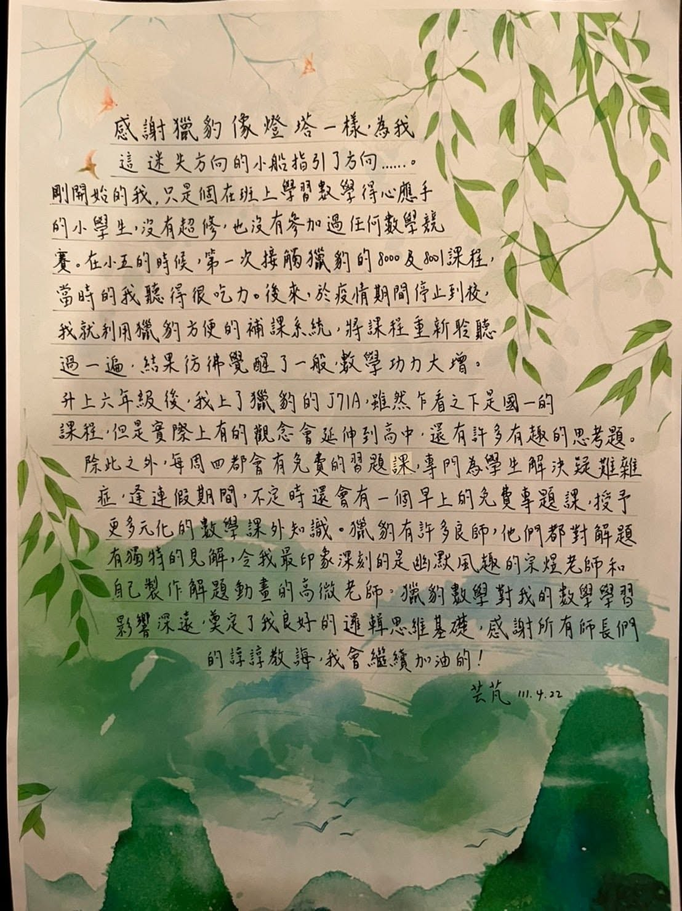
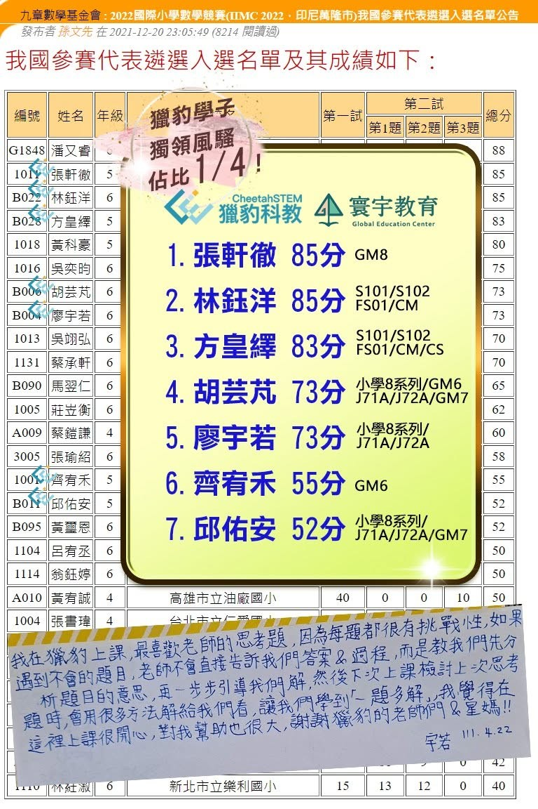

小六首次參與AMC8 得分21! & 小學晉級九章國際賽!
芸芃小妹寫下了在獵豹學習的心得:
感謝獵豹像燈塔一樣，為我這迷失方向的小船指引了方向......。剛開始的我，只是個在班上學習數學得心應手的小學生，沒有超修，也沒有參加過任何數學競賽。
在小五的時候，第一次接觸獵豹的8000及8001課程(目前小學P系列課程)，當時的我聽得很吃力。後來，於疫情期間停止到校，我就利用獵豹方便的補課系統，將課程重新聆聽過一遍，結果就彷彿覺醒了一般，數學功力大增。
升上六年級後，我上了獵豹的J71A，雖然乍看之下是國一的課程，但是實際上有的觀念會延伸到高中，還有許多有趣的思考題。除此之外，每周四都會有免費的習題課，專門為學生解決疑難雜症，逢連假期間，不定時還會有一個早上的免費專題課，授予更多元化的數學課外知識。
獵豹有許多良師，他們都對解題有獨特的見解，令我最印象深刻的是幽默風趣的宗煜老師和自己製作解題動畫的高微老師。獵豹數學對我的數學學習影響深遠，奠定了我良好的邏輯思維基礎，感謝所有師長們的諄諄教誨，我會繼續加油的！
芸芃是個聰明積極 文武雙全的孩子，她媽媽與我是好友，在星媽獵豹FB成立之前，我就跟她推薦獵豹。
當時芸芃媽對於天賦好又積極的孩子在數學學習的安排上頗為困惑也沒有方向。
當時孩子也沒有超修，也沒有參加任何數學競賽。
在我的建議下她們加入了獵豹課程（為小學高年級孩子設計的8000/8001，現在改制為小學P系列)，這個充滿挑戰性的課程，對剛加入者確實不容易，但是芸芃實踐了宗翰老師的理念：讓大腦在學習區中努力！
除了認真上直播課，更在最後課程結束時，全部重新看回放複習一次，並且把所學放在腦中思考。
芸芃媽媽也堅定地給予鼓勵與支持。
芸芃現在小六，在J71A/J72A國七課堂中表現突出，在沒有刷題的情形下，這次參與全台小學生高手雲集的九章數學競賽脫穎而出，是女生中成績最高(另一位同分的女同學也是獵豹學子)，成為出國比賽的代表隊！
看著芸芃這一年多來的突飛猛進，我深感高興！也為芸芃的努力而感動！
「2025/07獵豹小學數學 3~6年級P系列 (上學期) 課程 開跑了!」

